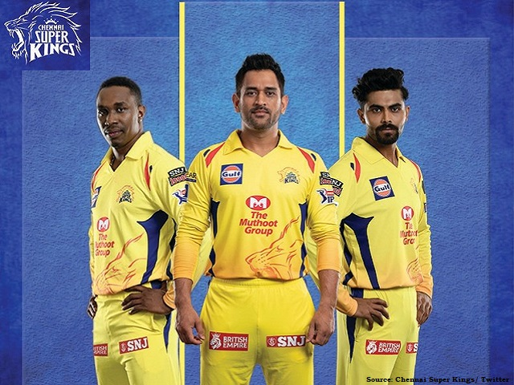

Performance of Teams
The performance of eight(IPL)teams
1. Mumbai Indians

The Mumbai Indians are an Indian Premier League franchise cricket team headquartered in Mumbai, Maharashtra.Rohit Sharma is the current captain of the Mumbai Indians.After defeating Royal Challengers Bangalore by 31 runs in the final, Mumbai Indians won the 2011 Champions League Twenty20. The club completed the double by winning its maiden IPL championship in 2013, defeating Chennai Super Kings by 23 runs in the final, and then defeating Rajasthan Royals by 33 runs in the Champions League Twenty20 final the following year. They became the third team to win more than one IPL trophy on May 24, 2015, when they defeated the Chennai Super Kings by 41 runs in the final.They became the first team to win three IPL titles on May 21, 2017, when they defeated the Rising Pune Supergiant by one run in a thrilling final. They were the first team to win 100 T20 matches while competing in the tournament....
2. Chennai Super Kings
The Chennai Super Kings (CSK) is an Indian cricket franchise located in Chennai, Tamil Nadu, that has competed in the Indian Premier League (IPL) since its inception in 2008. They were one of eight clubs selected to play in the Indian Premier League in 2021.Last year, Chennai Super Kings had an abysmal season, failing to qualify for the play-offs for the first time since the tournament's establishment. The Yellow Army will be trying to rebound this season with some fresh acquisitions. CSK is always a fan favourite, led by 'captain cool' MS Dhoni, and they still have some of the top match-winners in their ranks.
3.Delhi Capitals
The Delhi Capitals, formerly known as the Delhi Daredevils, are an Indian Premier League franchise cricket team located in Delhi. In 2019, the Delhi Daredevils were renamed the Delhi Capitals. The team's home venue is Arun Jaitley Stadium in Delhi. Shreyas Iyer, a promising Indian batsman, is now leading the team. Ricky Ponting, one of cricket's most successful captains, is DC's head coach. The Capitals have only made it to one IPL Final and have yet to win it.
4. Punjab Kings
The team lead by KL Rahul played brilliantly in the first part of the season, but faded in the second and missed out on the play-offs. The Mohali-based club, which has rebranded itself Punjab Kings, will be looking for consistency this year after making some fascinating buys in this year's auction.
5. Royal Challengers Bangalore
The IPL cricket franchise Royal Challengers Bangalore was in its 14th season in 2021. They played in the event as one of eight teams. Virat Kohli captained the squad, which was coached by Mike Hesson. They were ousted from the championship after losing to Kolkata Knight Riders in the Eliminator match after qualifying for the playoffs.India skipper Virat Kohli will once again lead IPL club Royal Challengers Bangalore (RCB). They came close to capturing their first IPL title last season before being ousted in the play-offs. The RCB team has some of the top T20 players in the world, and supporters are hoping for a better performance from their favourite players this year.
6.Kolkata Knight Riders
Dinesh Karthik gave over the leadership to England's World Cup-winning skipper Eoin Morgan after a dismal start to the 2020 season in order to focus more on batting. After making some intriguing auction purchases, the franchise will be striving for a far stronger performance in 2021. Kolkata, like Chennai, has a devoted fan following that will be hoping for a better performance this time.
7.Sunrisers Hyderabad
In the previous two seasons, Sunrisers Hyderabad (SRH) has been a difficult team to beat. The Orange Army franchise had a fantastic season the previous year, making it to the playoffs. The 'Orange Army' must be encouraged by David Warner's recent form as a batting stalwart. The squad also has a number of match-winners.
8.Rajasthan Royals
Rajasthan is one of those teams that no one can truly pick out. During the trade season and subsequently during the auction, the inaugural winners made significant changes to their roster. Rajasthan will be aiming for a stronger season under new skipper Sanju Samson, especially after spending a lot of money on South African all-rounder Chris Morris.